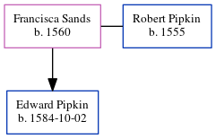

Francisca Pipkin (née Sands) 1560 -
[ Home ] | [ Calendar ] | [ Surnames Index ] | [ Census Index ] | [ Family History ]Francisca Sands, the 9 times great-grandmother of Michele Copp (née Phillips), was born in Fields, Westminster, London, England in 15601 and married Robert Pipkin (with whom she had 1 child, Edward) in Fields, Westminister London, England on 1579-05-072.
Children
- Edward was born on 1584-10-02
Citations
- OneWorldTree Online publication - Provo, UT, USA: MyFamily.com, Inc.
- England, Select Marriages, 1538–1973 Ancestry.com Operations, Inc.
Family Tree
Generated by ged2site. Last updated on Jun 6, 2024